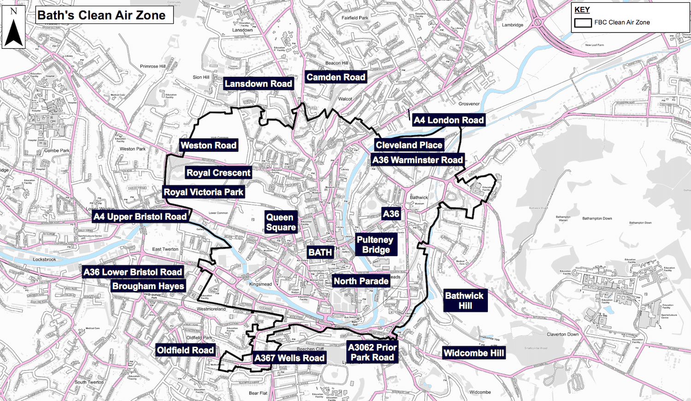

Since 15 March 2021, Bath, United Kingdom, has begun to fine highly
polluting vehicles driving within their ‘Clean Air Zone’ in an effort
to bring the city’s atmospheric nitrogen dioxide levels below the
legal limit.
The legal limit for atmospheric nitrogen dioxide concentrations in the
UK is 40μg/m3. Nitrogen dioxide frequently reaches high concentrations
in polluted areas and can be harmful towards human health; causing
inflammation of airways, coughs, shortness of breath, worsening of lung
and heart conditions and more. According to the UK government, nitrogen
dioxide pollution contributes to nearly 36,000 deaths in the UK annually.
Nitrogen oxide plays multiple roles in the chemical reactions of
polluted air. One third of these molecules are estimated to be emitted
into the atmosphere via combustion reactions in the engines of motor
vehicles. This is particularly an issue in densely populated cities
which experience a lot of traffic and the stalling of car engines.
Bath, Somerset, United Kingdom. | Silviya Noneva / Unsplash
Many areas in Bath have exceeded this permitted limit. By installing
air monitors on signs and lamp posts on the side of streets, the city
has been able to measure their air quality over the past years. In
2014 the average annual nitrogen dioxide levels reached 44 μg/m3,
whilst in 2019 they were recorded at an annual average of 29 μg/m3.
Bath and North East Somerset were advised by the government to continue
these decreasing trends by implementing the Bath Clean Air Zone.
The Bath Clean Air Zone operates under the following rules. Coaches,
Buses, trucks, lorries and private heavy goods vehicles, all using
either Euro 1-5/V diesel and Euro 1 to 3 petrol, have to pay a daily
charge of £100 within the Clean Air Zone. Taxis and private car hire,
minibuses, vans and light goods vehicles using Euro 1-5/V diesel and
Euro 1-3 petrol are charged daily £9 in the Clean Air Zone.
Those who have outstanding charges or have been fined have 28 days to
pay, however fines can be reduced from £120 to £40 if paid within the
first 14 days. Private cars and motorcycles, even those which are used
for work purposes, are not charged.
Three months into the Clean Air Zone being implemented, nitrogen
dioxide levels have still been hovering between 22 μg/m3
and 49 μg/m3 at peak traffic hours between 2pm to 10pm, when
measured from the 26 June 2021 to 3 July 2021 (data taken from Bath
and North East Somerset Council website). Since COVID-19 measures have
eased in the UK and shops have reopened, Bath parking lots which stood
empty for months are now full every day and the streets are bustling
with eager shoppers.
7-day hourly measurement of nitrogen dioxide, nitric oxide and nitrogen oxide at Bath A4 roadside. Measurements from 26 June 2021 to 3 July 2021, three and a half months after Bath Clean Air Zone was implemented. | Bath and North East
Somerset Council
Looking at the recent trends, it still seems like Bath is reaching
high nitrogen dioxide levels during their rush hours. However, daily
fluctuations could still even out to an annual average which is below
the 40μg/m3 limit. This can only be estimated with time
and accurate predictions.
By choosing Class C Charges strategy, the city opted for the option
that would allow as many cars as possible to be exempt from the rule,
whilst still averaging below the legal maximum concentration. However,
one can also argue that Bath and North East Somerset council are
applying charges to the wrong vehicles.
The fact that private cars and motorcycles are exempt from the rule,
still allows for a massive proportion—probably even the majority—of
nitrogen dioxide producing vehicles to be unaccounted for. To combat
pollution, it seems more logical to promote the reliance on public
transport, in order to transport more people for less emitted nitrogen
dioxide in the long term. However, buses and coaches are amongst the
vehicles which are charged £100 daily.
Private cars (unless electric) should be the vehicles which are
charged more, in order to increase incentive for the public to use
public transport. In return, public transport prices can be
significantly reduced, as the demand for these services increases.
Bath Council could even use the revenue generated from the Clean
Air Zone charges and fines, to invest into public transport
infrastructure, in order to make it an economically viable option for
everyone.

Map of Bath Clean Air Zone. | United Kingdom Government Website
Local businesses which rely on motor vehicles (i.e., vans, lorries,
light good vehicles) for transport of materials, should either be
charged less or be exempt from the rule. Whilst non-local businesses
should still pay the £100 charge for day visits. Additionally, elders
and individuals with disabilities or should also be exempt from the
Clean Air Zone charges and allowed to drive private vehicles in the city.
Many studies and some cities, such as Hamburg, Oslo and even Paris,
have proposed plans to become either fully or partly car free. For such
large cities, these plans include either having regions of the city
which ban private cars or having ‘car-free’ days. Making cities car-free
and increasing pedestrianization, can decrease air pollution, noise
pollution and temperature. It would also allow for the opportunity to
increase green spaces in cities, promoting both pollinator biodiversity
and human mental health.
Bath is a very small and historic city, and for the majority of the
able public everything can easily be reached within a walking
distance. Thus, in theory, the Clean Air Zone can be significantly
expanded towards the outer suburbs. If metropolises are speaking of
measures to decrease traffic, a small city like Bath has the potential
to be car-free.
Visiting cars (ie. non-Bath residents) should park in parking lots on
the outskirts of the small city, and then either walk or have cheap
public transport connections towards the city center. Visiting
businesses or private vehicles which need to enter the Clean Air Zone
should pay the full charge. Once again, both Bath and non-Bath disabled
residents should be exempt from any charge.
‘Bath has the potential to be a car-free city.’
Implementing measures to make cities car-free could enact huge strides
in decreasing air pollution. It could shift the reliance on cars for
only journeys between cities and the reliance on public transport
within cities. Though this may seem inconvenient at first, humans are
very adaptable—if a century ago we did not use cars, then we can
readjust old habits and take the bus.
If Bath and North Somerset Council really wants to decrease air
pollution and improve human health, stricter measures need to be
implemented. The Clean Air Zone is a good start, though not enough.
By investing revenues from the charges and fines, as well as government
funds, into public transport infrastructure, one would allow for better
connections, environmentally friendly buses, cheaper fares, more
efficient schedules and better paid employees.
It is time cities and its people start making sacrifices in their
habits—as many of them are not necessities. The environment and all
other of its inhabitants have made involuntary sacrifices for humans;
it is time we do better. The UK has the money and the technology to
make its cities greener, by creating solutions which keeps everybody
in mind.
If you live in Bath or are planning a trip, you can
check here if your motor vehicle is exempt from the current charges.
Featured Image: Alex Atudosie / Unsplash
DEFRA (2021) ‘Graph of hourly measurements for Bath A4 roadside.’ UK Air Information Resource. Department for Environment, Food and Rural Affairs.
Available at: https://uk-air.defra.gov.uk/data-plot?site_id=BHA4&days=7
[Accessed 6 April 2021]
GOV.UK (2021) ‘Drive in a clean air zone.’ Government United Kingdom.
Available at: https://www.gov.uk/clean-air-zones
[Accessed 6 April 2021]
Lenner M. (1967) Nitrogen dioxide in exhaust emissions from motor vehicles. Atmospheric Environment. Volume 21, Issue 1, pages 37-43.
Nieuwenhuijsen M. and Khreis H. (2016) Car free cities: Pathway to healthy urban living. Environment International. Volume 94, pages 251-262.